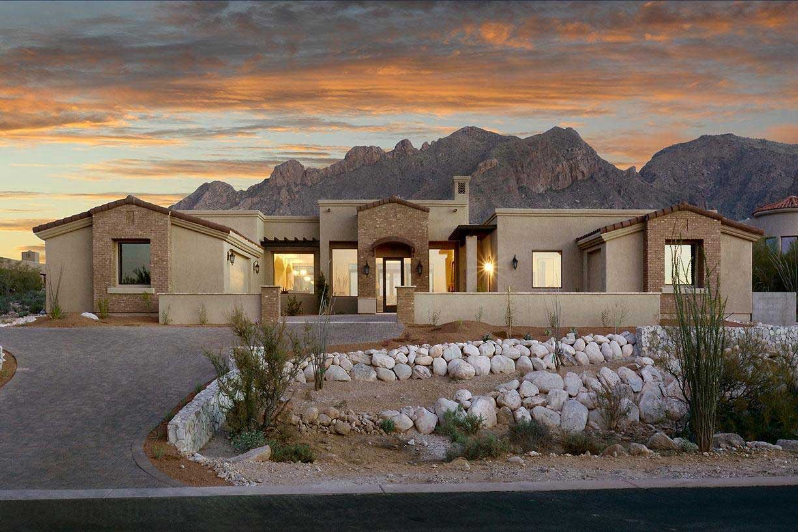
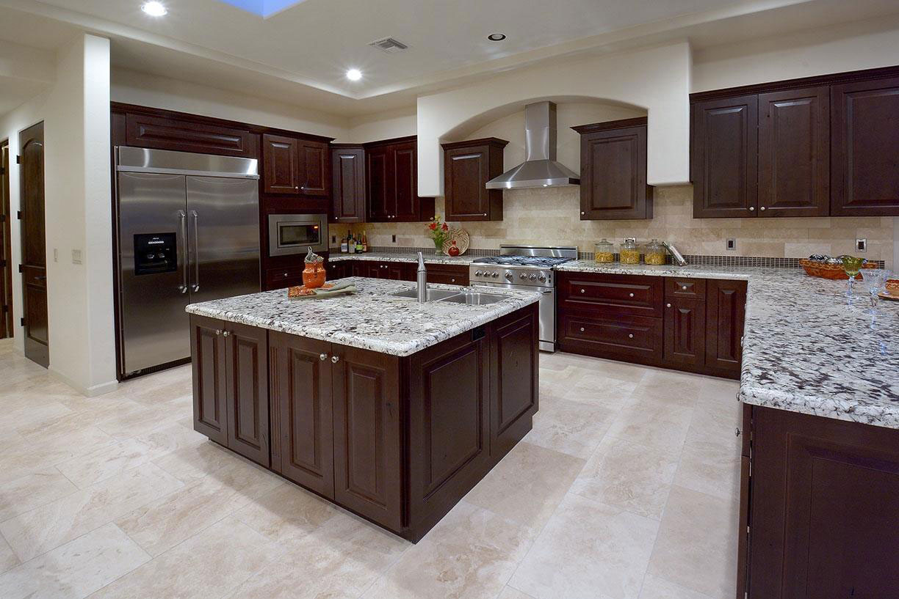

Residential / Documentation
Pima Canyon Residence
Drafting and building-systems work for a speculative home in Pima Canyon.

- Location
- Pima Canyon, Tucson, Arizona
- Type
- Speculative residence
- Area
- 4,844 square feet
- In Place scope
- Drafting and nonstructural systems
- Architect of record
- William Gansline
The project
In Place Architecture provided drafting and worked on nonstructural building systems for this 4,844-square-foot residence. William Gansline was the architect of record.
